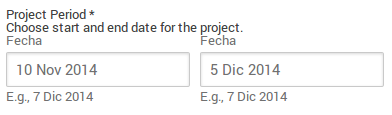

Paso 5: Informes del Proyecto para Scout.org (OMMS)
Si aún no has creado tu cuenta en www.scout.org es lo primero que debes hacer, tal como lo indicamos en el siguiente video.
También puedes mirarlo por Youtube Pulsando Aquí
Luego de tener tu cuenta o perfil en scout.org debes proceder a cargar tu Proyecto de la Red de Paz , tal cual te mostramos a continuación:
Como llenar el formulario
- Busca en la parte superior izquierda de la página, en la barra de Menú, el botón Crear, y pulsa una vez sobre el.

- Hecho esto aparecerá un Cuadro flotante donde deberás escoger la opción Proyecto, que aparece identificada con un pico y una pala en forma de X.
Este mismo cuadro se usa para crear otros elementos importantes dentro de Scouts.org; pero en este momento sólo nos interesa el proyecto.
Nota: las casillas que tienen un * deber ser llenadas obligatoriamente, o no se puede enviar el reporte.
- En esta casilla valiéndote de la lista desplegable, selecciona el Idioma de tu proyecto, que en nuestro caso es el Español.
- En este espacio deberás escribir el Nombre o Título del Proyecto.
En este caso particular, por tratarse de un Proyecto Nacional que se está aplicando en diferentes zonas del Páis; deberá llevar siempre el mismo nombre... El cual es Red de Paz... Simplemente escribe eso en la casilla.
- Aquí, valiéndote de los calendarios desplegables, selecciona la fechas de inicio y final para el proyecto ó Project Period (Período del Proyecto).
Recuerda que debes contar desde el día que hicistes el análisis inicial, hasta el día en que ejecutaste la acción.
 - Esta casilla es para plasmar la Descripción del Proyecto, es decir que se hizo desde el primer momento hasta la toma de acción.
- Esta casilla es para plasmar la Descripción del Proyecto, es decir que se hizo desde el primer momento hasta la toma de acción.
Por ejemplo:
1.- Llevé a cabo un análisis del comportamiento de mis compañeros y el mio propio, enfocado en como tratamos a las personas que presentan rasgos que los distinguen marcadamente del resto del grupo. Este análisis arrojó que existía un ambiente hostil principalmente con dos compañeros, uno por su condición social, y otro por que usa lentes para mejorara su visión.
2.- Pedí permiso a mi profesor y en la dirección del colegio para hacer la actividad contra el acoso. Dos de mis compañeras se unieron a mi para apoyarme con el proyecto, ellas no son Scouts.
3.- Solicité a mi jefe de Unidad el material impreso para llevar a cabo la charla, este a su vez se comunicó con la Región para este fin.
4.- Dicté la charla en conjunto con mis compañeras, allí conversamos un rato sobre los efectos del acoso en los demás, se hizo una dinámica de sensibilización. Se entregó el material impreso, para finalizar se hizó el decálogo Anti-Bullying, y se terminó la cartelera que llevé.
Luego del cuadro aparecen una indicaciones de como mejorar la presentación del texto introducido con algunas etiquetas HTML
Original
You are able to use some HTML tags.
Use <b>bold text</b> to mark text as bold.
Use <i>italic</i> to mark text as italic.
Use <u>underline</u> to underline text.
Use <ul><li>List item 1</li><li>List item 2</li></ul>
to create lists.
Use <a href="http://scout.org">Text displayed</a>
to add a link.
Traducción
Usted puede utilizar algunas etiquetas HTML .
Utilice <b>texto en negrita</b> para el texto en negrita.
Utilice <i>cursiva</i> para el texto en cursiva .
Utilice <u>subrayado</u> para subrayar el texto .
Utilice <ul><li>Elemento Lista 1</li><li>Elemento Lista 2</li></ul>
para crear listas.
Utilice <a href="http://scout.org">texto mostrado</a>
para añadir un enlace.
- Con estos botones, selecciona las fotos y/o imagenes del proyecto que quieras dar a conocer Imágenes (Pictures), primeros debes presionar Examinar... para seleccionar de tu computador, tabla o teléfono, las fotos que desees, y luego que las hayas seleccionado, pulsa Subir al servidor, para que ser carguen en el sitio.
Para este proyecto, deberás tomar por lo menos tres fotografías, una dando la charla, aotra repartiendo el material y finalmente otra de la cartelera. Si quieres tomar otras aadicionales mejor aún.
Las imagenes no deben pesar más de 50 Mb en total. Pueden ir en los siguientes formatos: png, gif, jpg y jpeg.
- De la misma manera que con las imágenes, si lo deseas aquí puedes subir Archivos y/o Documentos (Documents and Files), que permitan ampliar la información sobre el proyecto. En este caso no es necesario subir ningún archivo; pero tampoco está contraindicado.
- Si tu proyecto se basa en otro ya existente, debes mencionarlo aquí, Proyecto Original (Original project), ya que esta es la forma correcta de reconocer el trabajo realizado por otros.
Para este proyecto, deberás colocar Red de Paz, ya que como lo explicamos antes todos se basan en esta iniciativa de la ASV.
- Es obligatorio que todo proyecto tenga por lo menos un (01) Tema, esta lista desplegable permite escoger uno o más temas de acuerdo a nuestra consideración. Los items disponibles son:
- Formación de Adultos (Adult Training)
- Desarrollo de la Comunidad (Community Development)
- Diálogo (Dialogo)
- Salud (Health)
- Derechos humanos (Human rights)
- Liderazgo (Leadership)
- Habilidades para la Vida (Life Skills)
- Habilidades al Aire libre (Outdoors skills)
- Sistema de Patrulla (Patrol System)
- Paz
- Desarrollo Personal (Personal Progression)
- Servicio (Service)
Para el proyecto Red de Paz, consideramos que los más adecuados son: Diálogo (Dialogo), Paz y Derechos humanos (Human rights).
- Las Etiquetas son una o varias palabras que ayudan a identificar y facilitar la busqueda de artículos relacionados en un sitio web. Puedes colocar las que consideres relevantes, recordando separar cad palabra con una coma (,).
- Señala aquí si se trata de un Proyecto de Servicio (Service Project), pulsado una vez sobre la casilla de verificación.
Para el proyecto Red de Paz, esta casilla debe estar seleccionada, ya que efectivamente se trata de un Proyecto de Servicio.
- Indicar el número de Horas de servicio empleadas en el proyecto también es un requisito obligatorio para llenar el formulario.
Importante: para calcular el total de horas debes multiplicar el número de participantes en el Proyecto por el número de horas utilizados en el diagnóstico, planificación y ejecución del proyecto.
Ejemplo: Participó el Scout más 2 compañeros del salón, el tiempo total empleado fue de 5 horas, entonces tenemos que 3x5=15.
- También es indispensable señalar el Número de participantes del proyecto. Anota los niños o jóvenes scouts encargados de la actividad, otros niños o jóvenes No scouts y los adultos que apoyaron.

- Es muy importante e interesante señalar el Sitio o Lugar donde se llevó a cabo el proyecto. Para eso está destinado el Mapamundi que se puede observar en el formulario.
Primero utiliza el icono con foma de Mano para mover el mapa hasta el lugar deseado, sólo debes mantener pulsado y arrastrar la imagen.
Con la Barra lateral donde está los signo (+) y (-) puedes hacercarte para ver con más detalle.
Luego que tengas ubicado el punto exacto, usa el icono en forma de Laṕiz para señalar el sitio. Hecho esto vuelve a pulsar el icono con forma de Mano
Nota: solo se puede señalar un punto por cada Mapa.
- Si deseas puedes incluir una dirección Web en tu publicación, a través de esta casilla Vínculos.
Puede ser una página web, un blog, un foro, o cualquier otro servicio donde tengas más información sobre el proyecto. Simplemente debes copiar y pegar aquí la dirección URL.
Si se desea añadir más de una dirección web, se usa el botón Añadir otro elemento
 - Así mismo también puedes incluir un Video en tu publicación del proyecto.
- Así mismo también puedes incluir un Video en tu publicación del proyecto.
Simplemente debes copiar y pegar aquí la dirección URL del video. Estos deberán estar alojados en servicios como: Youtube,
Si se desea añadir más de una dirección web, se usa el botón Añadir otro elemento
 - Una vez llenos todos los espacios necesarios, basta con pulsar Publicar (Publish) para que el proyecto quede registrado en scout.org.
- Una vez llenos todos los espacios necesarios, basta con pulsar Publicar (Publish) para que el proyecto quede registrado en scout.org.
Si aún te faltaron algunos datos, y no quieres perder lo que has escrito hasta el momento, usa la opción Salvar como Borrador (Save as Draft), luego puedes volvera entrara y terminar el trabajo.